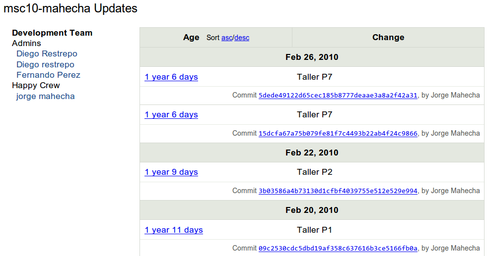

An interactive Git Tutorial: the tool you didn’t know you needed¶
From personal workflows to open collaboration¶
Note: this tutorial was particularly modeled, and therefore owes a lot, to the excellent materials offered in:
“Git for Scientists: A Tutorial” by John McDonnell (no link as this tutorial seems to have disappeared from the internet).
Emanuele Olivetti’s lecture notes and exercises from the G-Node summer school on Advanced Scientific Programming in Python.
In particular I’ve reused the excellent images from the Pro Git book that John had already selected and downloaded, as well as some of his outline. But this version of the tutorial aims to be 100% reproducible by being executed directly as an IPython notebook and is hosted itself on github so that others can more easily make improvements to it by collaborating on Github. Many thanks to John and Emanuele for making their materials available online.
After writing this document, I discovered J.R. Johansson’s tutorial on version control that is also written as a fully reproducible notebook and is also aimed at a scientific audience. It has a similar spirit to this one, and is part of his excellent series Lectures on Scientific Computing with Python that is entirely available as Jupyter Notebooks.
Wikipedia¶
“Revision control, also known as version control, source control or software configuration management (SCM), is the management of changes to documents, programs, and other information stored as computer files.”
Reproducibility?
Tracking and recreating every step of your work
In the software world: it’s called Version Control!
What do (good) version control tools give you?
Peace of mind (backups)
Freedom (exploratory branching)
Collaboration (synchronization)
Git is an enabling technology: Use version control for everything¶
Paper writing (never get
paper_v5_john_jane_final_oct22_really_final.texby email again!)Grant writing
Everyday research
Teaching (never accept an emailed homework assignment again!)
Teaching courses with Git¶

Annotated history of each student’s worfklow (and backup!)¶

Git is easy!¶
Very high level picture: an overview of key concepts¶
The commit: a snapshot of work at a point in time

Credit: ProGit book, by Scott Chacon, CC License.
A repository: a group of linked commits

Note: these form a Directed Acyclic Graph (DAG), with nodes identified by their hash.
A hash: a fingerprint of the content of each commit and its parent
from hashlib import sha1
# Our first commit
data1 = b'This is the start of my paper.'
meta1 = b'date: 1/1/17'
hash1 = sha1(data1 + meta1).hexdigest( )
print('Hash:', hash1)
# Our second commit, linked to the first
data2 = b'Some more text in my paper...'
meta2 = b'date: 1/2/1'
# Note we add the parent hash here!
hash2 = sha1(data2 + meta2 + hash1.encode()).hexdigest()
print('Hash:', hash2)
And this is pretty much the essence of Git!
First things first: git must be configured before first use¶
The minimal amount of configuration for git to work without pestering you is to tell it who you are. You should run a version of these commands in your shell:
git config --global user.name "Your Name"
git config --global user.email "your.email@yourplace.org"
And while we’re at it, we also turn on the use of color, which is very useful
git config --global color.ui "auto"
Set git to use the credential memory cache so we don’t have to retype passwords too frequently.
Github offers in its help pages instructions on how to configure the credentials helper for Mac OSX, Windows and Linux.
The plan for this tutorial¶
The rests of this tutorial is structured in the following way: after the above brief overview of key concepts you need to understand in order for git to really make sense, we will then dive into hands-on work. We will discuss 5 “stages of git” with scenarios of increasing sophistication and complexity, introducing the necessary commands for each stage:
Local, single-user, linear workflow
Using remotes as a single user
An introduction to branches
Remotes for collaborating in a small team
Full-contact github: distributed collaboration with large teams
In reality, this tutorial only covers stages 1-4, since for #5 there are many software develoment-oriented tutorials and documents of very high quality online. But most scientists start working alone with a few files or with a small team, so I feel it’s important to build first the key concepts and practices based on problems scientists encounter in their everyday life and without the jargon of the software world. Once you’ve become familiar with 1-4, the excellent tutorials that exist about collaborating on github on open-source projects should make sense.